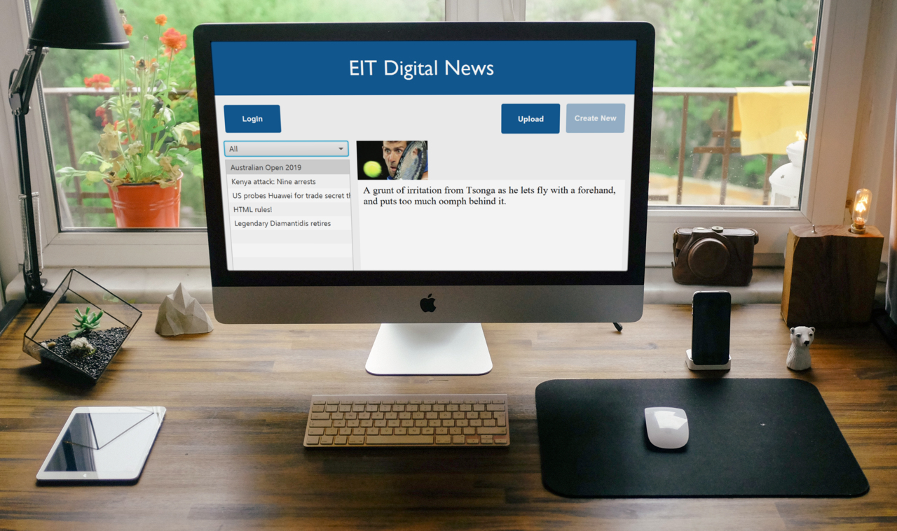
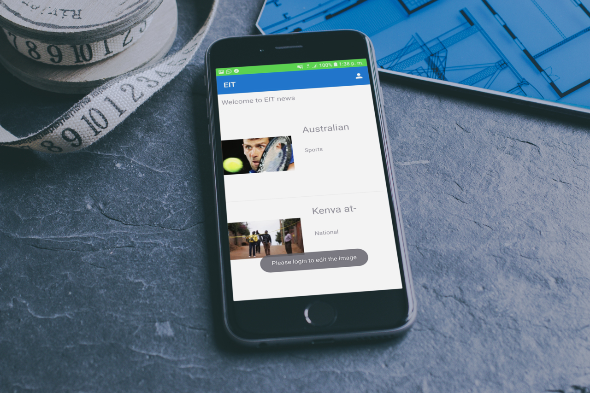

This web application was made for a User Interface programming course that was part of the EIT HCID master. The project consisted in creating a newspaper application for three different platforms: web, mobile and desktop. This project was in collaboration with other two master students.
The goal of this project is to develop a newspaper application with the typical functionalities needed to publish/manage a newspaper web page: show the news in its main page, show the details of a given news, filter the news according to their category, show the newspaper Twitter timeline, login to the application and be able to create, update or remove the news contents.
The web application was developed using Node.JS and Angular JS. It was connecting to the API and retrieving the news from the server. The user is able to login through a simple authentication and, once logged in, he/she can create, update or delete articles. For the UI, it was used HTML, CSS and Javascript.
This desktop application was made for a User Interface programming course that was part of the EIT HCID master. The project consisted in creating a newspaper application for three different platforms: web, mobile and desktop. This project was in collaboration with other two master students.

The goal of this project is to develop a newspaper application with the typical functionalities needed to publish/manage a newspaper web page: show the news in its main page, show the details of a given news, filter the news according to their category, show the newspaper Twitter timeline, login to the application and be able to create, update or remove the news contents.
The desktop application was developed using JavaFX. It was connecting to the API through the API endpoints and was retrieving all the information. The main screen was an accordion list from JavaFX displaying all the news according to the category selected on the left sidebar. The user is able to login and interact (either update or delete) with the news he/she already created or create a new article.
This mobile application was made for a User Interface programming course that was part of the EIT HCID master. The project consisted in creating a newspaper application for three different platforms: web, mobile and desktop. This project was in collaboration with other two master students.

The goal of this project is to develop a newspaper application with the typical functionalities needed to publish/manage a newspaper web page: show the news in its main page, show the details of a given news, filter the news according to their category, show the newspaper Twitter timeline, login to the application and be able to create, update or remove the news contents.
The mobile application was developed using Android Studio. It was connecting to the API through the endpoints and was retrieving all the information and inserting it into cards. The main screen was displaying cards with an image, the title of the news and its abstract. Once the user clicked in one of the cards, a new activity is opening with the full information of the news. This was implemented by retrieving the ID of the clicked card and in the new screen was retrieving all the information from the ID selected.